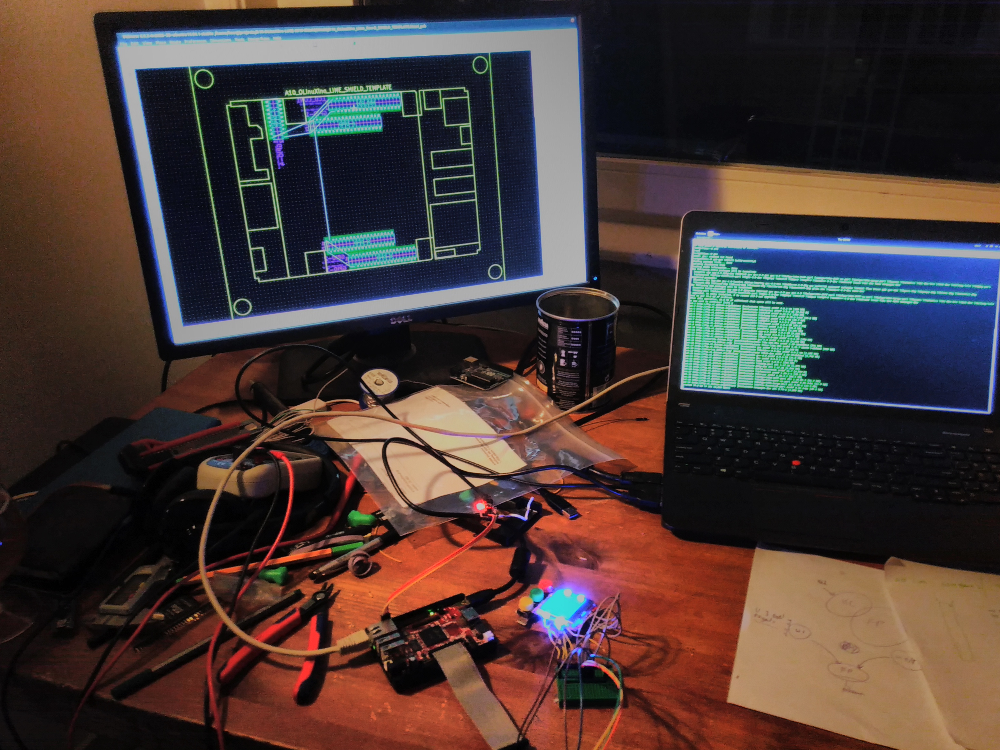

Index¶
The project brings togteher quite a few things I learned in the past including 3d drawing using openscad, design using KiCad, Kernel and driver development (Linux / Device tree), Electronics design and properly setting up a debian based system.
The initial goal of this project was to create a small device what could be used to install custom “ROM”s on Android devices using the fastboot tools.
You can find the source code schematics BOM and such on the project git repository. The source code for this website is also stored in git in a branch
Contents: